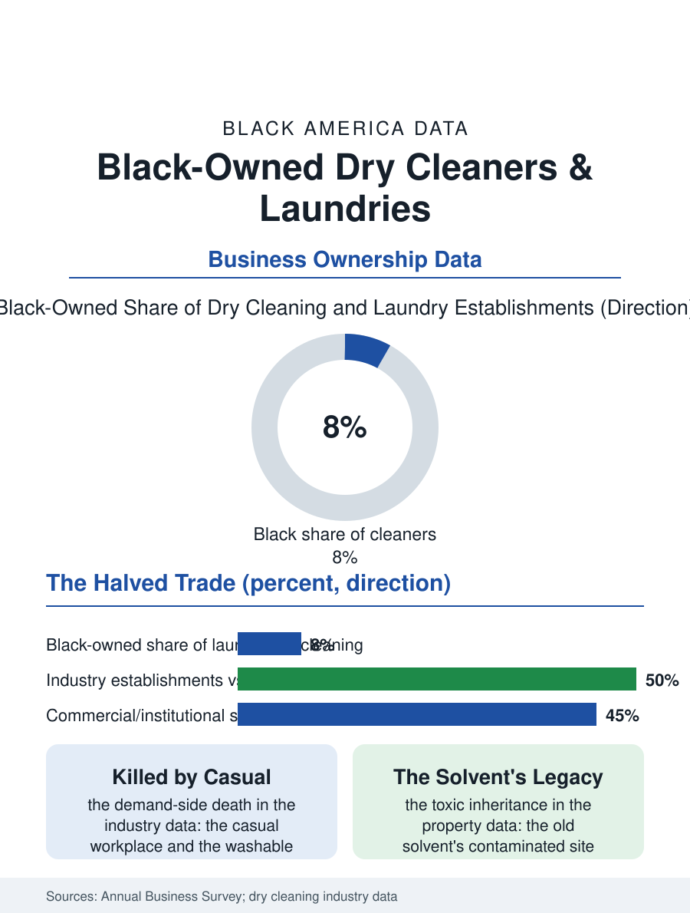

Black Business
The Counter's Knowledge: Black-Owned Dry Cleaners
The respectability economy's infrastructure, halved by the casual workplace, surviving on the institutional book and the sneaker's restoration. The laundry file.

The dry cleaner and the laundry were the classic immigrant and Black storefront of the twentieth century's cities, the hand laundry and the pressing shop being among the first businesses the excluded could own, and the Black-owned remnant now operates inside an industry the wash-and-fold subscription and the casual workplace have halved. The business census counts the dry cleaning and laundry establishments in the thousands, falling. This article reads the laundry file.
The Pressing Shop's Century
The historical file is the urban economy's own: the pressing shop required the boiler, the skill, and the corner, a capital threshold the barber's and the tailor's generation could meet, and the service it sold, the suit pressed and the shirt laundered for the church and the office, was the respectability economy's infrastructure, the cleaner's counter one of the corridor's standing institutions, its proprietor knowing the neighborhood's occasions by its garments, the wedding's dress and the funeral's suit passing through the same hands in the same week. The Korean immigration's later chapter in the trade is the file's familiar succession pattern, the new arrivals' family capital and hours taking the industry's center in the great cities as the Black founders' generation retired, the two communities' chapters written in the same shops in sequence. The industry's contraction then arrived from the demand side entire: the casual workplace killed the suit's rotation, the washable fabrics killed the dry cleaning's necessity, and the home machine and the laundromat's decline ran in parallel, so that the trade's census count halved across the recent decades in the pattern of the video store's, an industry whose remaining demand concentrates in the affluent professional districts and the occasion garment. The route driver's book deserves its line in the survivors' file, the commercial route being a relationship asset the plant's sale prices explicitly, its stops' loyalty running to the driver and the counter's name together, so that the route, like the barber's book and the courier's knowledge, is a form of the community's trust converted into the firm's transferable capital.
Wash-and-Fold and the App
The survivors' models are the file's current data: the wash-and-fold service for the apartment city, priced by the pound and delivered by the route, whose logistics the app platforms have industrialized, the neighborhood plant becoming the platform's subcontractor at the platform's margin in the pattern of the other dispatch files, against which the established cleaner's defense is the institutional book, the restaurant's linens, the hotel's and the uniform service's overflow, the church's and the funeral home's standing accounts, commercial volume whose contracts outlast the retail counter's decline. The environmental file is the trade's regulatory weight: the dry cleaning solvent's legacy, the contaminated site beneath the old plant, is the industry's balance sheet item and the property's curse in the real estate file, the cleanup liability attaching to the land the cleaner's family may own, a toxic inheritance the state funds exist to remediate and the small owner's estate discovers at the sale. The green cleaning technologies, the wet cleaning and the liquid carbon dioxide, are the trade's current capital question, their cost ladder sorting the survivors by the balance sheet in the pattern of every equipment transition in the business section.
The Counter's Knowledge
The laundry file closes on the counter's knowledge, because the cleaner held a particular intimacy in the community's life, the garments being the biography's material form, and the proprietor's discretion about the pocket's contents and the stain's story was the trade's professional ethic long before the privacy file had a name. The trade's future in the data is the niche's: the occasion and the heirloom, the sneaker and the designer restoration services of the current revival, whose practitioners, young and platform-native and substantially Black in the sneaker restoration's case, are rebuilding a garment care trade on the culture's new valuables, the thousand-dollar shoe replacing the suit as the article worth the specialist's care. The census counts the establishments in decline and the niches in formation in the same category's confusion. The file's last entry is the ticket stub and the spinning rack, the neighborhood's week made visible in plastic and paper, at the counter where the proprietor has called the customers by name across the industry's whole arc, and where the name, in the surviving shops, is the asset the app cannot dispatch.
More in Black Business
Black-Owned Businesses: Counts, Receipts, and the Representation Gap
About 161,000 Black-owned employer firms and three million solo ventures: how the Census Bureau counts Black business ownership, where firms concentrate, and the gap between population share and business share.
Black Median Net Worth: The Wealth Gap in Federal Reserve Data
The Federal Reserve puts Black median family net worth at $44,900, against $285,000 for White families — about 16 cents on the dollar. The widest gap in economic data.
Black Buying Power: The $1.8 Trillion Consumer Economy
Black buying power is estimated at about $1.8 trillion — larger than the economy of most nations. What the figure measures, who produces it, and what it buys.
Source: U.S. Census Bureau, Annual Business Survey for dry cleaning and laundry services; National Cleaners Association data.